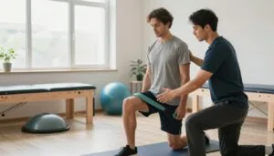

Operacija meniskusa i pravilna rehabilitacija
Ozljede meniskusa su česte u koljenom zglobu. Često zahtijevaju operaciju meniskusa kako bi se ublažili simptomi i poboljšala funkcija. U nastavku ćemo razmotriti važnost poznavanja ozljeda meniskusa i ključnu ulogu pravilne rehabilitacije u oporavku.
Kada dođe do ozljede meniskusa, ključno je potražiti medicinsku pomoć kako bi se pronašao pravi tretman. Često je potreban kirurški zahvat za popravak ili uklanjanje oštećenog meniskusa. Nakon toga, rehabilitacija je presudna za dobar ishod i sprječavanje dodatnih problema.
Ključni zaključci
- Ozljede meniskusa često zahtijevaju kirurški zahvat.
- Pravilna rehabilitacija je ključna za uspješan oporavak.
- Razumijevanje ozljeda meniskusa bitno je za učinkovito liječenje.
- Rehabilitacija pomaže u sprječavanju daljnjih komplikacija.
- Dobro strukturiran rehabilitacijski program osigurava optimalne rezultate.
Razumijevanje meniskusa i njegovih ozljeda
Meniskus je hrskavica u koljenu koja nam pomaže glatko se kretati. Održava koljeno stabilnim i apsorbira udarce. To je ključno za našu udobnost i pokretljivost.
Anatomija i funkcija meniskusa
Meniskus se sastoji od dva dijela, medijalnog i lateralnog meniskusa. Nalaze se između kostiju u koljenu. Ovi dijelovi su vitalni za biomehaniku koljena. Smanjuju trenje i apsorbiraju udarce.
Medijalni i lateralni meniskus
Medijalni meniskus je veći i čvršće je pričvršćen za tibiju. Češće se ozljeđuje jer je manje pokretljiv. Lateralni meniskus je pokretljiviji i rjeđe se ozljeđuje. Oba su važna za zdravlje koljena.
Uloga meniskusa u biomehanici koljena
Meniskus ima ključnu ulogu u biomehanici koljena. Pomaže da se kosti koljena bolje prilagode jedna drugoj. To je važno za ravnomjernu raspodjelu opterećenja i sprječavanje oštećenja.
- Apsorpcija udaraca
- Raspodjela opterećenja
- Omogućavanje glatkog pokreta
- Poboljšanje stabilnosti
Česte ozljede meniskusa
Ozljede meniskusa su česte, posebno kod sportaša. Događaju se najčešće u sportovima koji uključuju trčanje, skakanje ili brze promjene smjera.
Traumatske ozljede
Traumatske ozljede meniskusa nastaju tijekom sportskih aktivnosti. Događaju se kada se koljeno uvrne ili savije. Mogu uzrokovati rupture, od manjih do onih koje zahtijevaju operaciju.
Degenerativne ozljede
Degenerativne ozljede nastaju zbog habanja tijekom vremena. Dovode do degeneracije meniskusa i ruptura. Češće su kod starijih osoba i mogu biti posljedica starenja ili prekomjernog korištenja.
Poznavanje ozljeda meniskusa pomaže u prevenciji i liječenju. Savjeti zdravstvenih stručnjaka vrlo su korisni za upravljanje ovim ozljedama i oporavak.
Dijagnostika ozljeda meniskusa
Dijagnostika ozljeda meniskusa uključuje nekoliko koraka. Najprije liječnik pregleda koljeno. Zatim može koristiti dijagnostičke pretrage. Pogledajmo kako ovi koraci pomažu u utvrđivanju ozljede.
Klinički pregled
Prvo što liječnik radi je pregled koljena. Provjerava pokretljivost koljena i prisutnost boli. Može koristiti McMurray test za otkrivanje ruptura meniskusa. To pomaže u utvrđivanju problema i određivanju sljedećih koraka.
Slikovne dijagnostičke metode
Slikovne pretrage su ključne za potvrdu ozljede meniskusa. Glavne pretrage su:
- Magnetska rezonancija (MRI)
- Ultrazvuk
- Rendgen (rjeđe se koristi za meniskus, ali koristan za druge probleme)
Magnetska rezonancija (MRI)
MRI je prvi izbor za prikaz ozljeda meniskusa. Izvrsno prikazuje meka tkiva. To pomaže liječnicima da uoče rupture i druge probleme.
Ultrazvuk se također koristi, ali nije tako precizan kao MRI. Koristan je za dinamički prikaz koljena. Artroskopija je invazivnija i obično se koristi za planiranje operacije.
Kada je operacija potrebna?
Operacija je potrebna ako konzervativno liječenje poput fizikalne terapije ne daje rezultate. Odluka o operaciji ovisi o veličini i lokaciji rupture. Također ovisi o zdravstvenom stanju pacijenta i razini njegove aktivnosti. Vježbe su važne prije i nakon operacije.
Neki čimbenici koji utječu na odluku o operaciji su:
- Veličina i lokacija rupture
- Blokira li se koljeno ili zaglavljivanje
- Ako konzervativno liječenje ne pomaže
Priprema za operaciju meniskusa
Operacija meniskusa zahtijeva pažljivu pripremu. To uključuje prijeoperacijske pretrage i mentalnu pripremu. Dobra priprema je ključna za uspješnu operaciju i lakši oporavak.
Prijeoperacijske pretrage
Prije operacije obavljaju se razne pretrage kako bi se utvrdila vaša spremnost. To može uključivati krvne pretrage, MRI ili rendgen te fizički pregled. Pomažu u procjeni vašeg zdravstvenog stanja i stanja koljena.
Uobičajene prijeoperacijske pretrage uključuju:
- Kompletna krvna slika (KKS)
- Biokemijske pretrage krvi
- Koagulacijske pretrage
- Slikovne pretrage (MRI, rendgen)
Mentalna priprema
Mentalna priprema jednako je važna kao i fizička. Znanje o tome što očekivati može pomoći u oporavku.
Razumijevanje postupka
Ključno je razumjeti operaciju. Vaš kirurg će vam objasniti vrstu operacije i što očekivati prije i nakon zahvata.
Postavljanje realnih očekivanja
Realna očekivanja su presudna. To znači poznavanje plana rehabilitacije i vremena oporavka. Dobar plan pomaže u vraćanju snage i pokretljivosti koljena nakon operacije meniskusa.
Dobra fizička i mentalna pripremljenost čini vaše iskustvo operacije boljim.
Vrste kirurških zahvata na meniskusu
Kirurzi koriste različite tehnike za liječenje ozljeda meniskusa. One se kreću od jednostavnih do složenijih zahvata. Izbor ovisi o težini ozljede, lokaciji, zdravstvenom stanju pacijenta i razini aktivnosti.
Artroskopska meniscektomija
Artroskopska meniscektomija je česta metoda koja se izvodi tijekom artroskopije koljena. Koristi artroskop za vizualizaciju meniskusa i uklanjanje oštećenog dijela.
Parcijalna meniscektomija
Kod parcijalne meniscektomije uklanja se samo oštećeni dio. To pomaže u očuvanju što više zdravog tkiva. Preferira se jer zadržava amortizacijsku funkciju meniskusa.
Totalna meniscektomija
Totalna meniscektomija uklanja cijeli meniskus. Iako je ponekad nužna, može povećati opterećenje na koljeno i dovesti do osteoartritisa.
Popravak meniskusa
Popravak meniskusa uključuje šivanje ili ponovno pričvršćivanje potrganog meniskusa. Često se preporučuje mlađim pacijentima sa svježim rupturama.
Transplantacija meniskusa
Transplantacija meniskusa je složen postupak. Zamjenjuje oštećeni meniskus donorskim. Obično je namijenjena osobama kojima je uklonjen cijeli meniskus, a i dalje imaju bolove i smetnje u funkciji.
U nastavku su prikazane glavne razlike između ovih zahvata:
Rehabilitacijski centri poput Kineteka imaju ključnu ulogu u oporavku, a Kinetek uređaji za oporavak koljena pružaju brojne prednosti. Nude personalizirane programe za pacijente nakon operacije meniskusa.
Neposredna poslijeoperacijska njega
Odmah nakon operacije meniskusa, briga o sebi je ključna. Pokazat ćemo vam kako to pravilno raditi kako biste izbjegli probleme i pomogli tijelu da zacijeli.
Upravljanje boli
Upravljanje boli je iznimno važno neposredno nakon operacije. Pridržavajte se lijekova za bol koje vam je liječnik propisao. Ako se bol pogorša, odmah obavijestite liječnika.
Njega rane
Održavanje rane čistom je presudno za sprječavanje infekcije. Pazite da ostane suha i slijedite upute liječnika o previjanju. Pratite znakove infekcije poput crvenila ili otekline.
Početna mobilizacija
Blago pomicanje koljena je važno. Pomaže u sprječavanju ukočenosti i potpomogne zacjeljivanje.
Korištenje pomagala za hodanje
Štake ili hodalica mogu biti potrebne kako biste izbjegli prekomjerno opterećenje koljena. Vaš fizioterapeut ili liječnik pokazat će vam kako ih pravilno koristiti.
Počnite s jednostavnim pokretima koljena poput ispružanja i savijanja. Zatim napredujte prema zahtjevnijim vježbama prema preporuci liječnika.
Upravljanjem boli, njegom rane i početkom kretanja možete učiniti svoj oporavak nakon operacije meniskusa lakšim.
Faze rehabilitacije nakon operacije meniskusa
Rehabilitacija nakon operacije meniskusa podijeljena je u faze. Svaka faza ima specifične ciljeve i aktivnosti. Osmišljene su kako bi vam pomogle u uspješnom oporavku.
Prva faza (0-2 tjedna)
Prva faza usmjerena je na smanjenje boli i otekline. Također poboljšava opseg pokreta i jača mišiće.
Ciljevi i ograničenja
U prvoj fazi, glavni ciljevi su smanjiti bol i oteklinu. Također treba postići potpunu ekstenziju koljena i započeti blagu fleksiju. Aktivnosti s opterećenjem su ograničene kako bi se izbjegao prekomjerni stres na koljeno.
Preporučene aktivnosti
Preporučene vježbe uključuju podizanje ispružene noge, klizanje petom i blago savijanje koljena. Ove vježbe pomažu održati pokretljivost koljena i ojačati mišiće bez prekomjernog opterećenja meniskusa.
Druga faza (2-6 tjedana)
Druga faza uvodi intenzivnije vježbe jačanja. Također omogućuje više aktivnosti s opterećenjem.
Napredak u opterećenju
Pacijenti se potiču na postupno povećanje aktivnosti s opterećenjem. Ova faza ima za cilj poboljšati stabilnost i snagu koljena.
Proširenje vježbi
Vježbe poput čučnjeva, iskoraka i potiska nogama dodaju se za jačanje koljena i mišića. Vježbe ravnoteže i propriocepcije također se naglašavaju za poboljšanje funkcije koljena.
Treća faza (6-12 tjedana)
Završna faza fokusira se na funkcionalni trening. Priprema pacijenta za povratak normalnim aktivnostima.
Funkcionalni trening
Uvode se funkcionalne vježbe koje oponašaju svakodnevne i sportske aktivnosti. Ove vježbe poboljšavaju funkciju koljena i pripremaju za zahtjevnije aktivnosti.
Priprema za povratak normalnim aktivnostima
Pacijenti se postupno uvode u zahtjevnije aktivnosti. To uključuje trčanje, skakanje i vježbe promjene smjera. Cilj je osigurati da koljeno može podnijeti različita opterećenja.
Slijedeći ovaj strukturirani plan rehabilitacije, pacijenti mogu postići uspješan oporavak. Zatim se mogu vratiti svojim uobičajenim aktivnostima.
Oporavak nakon operacije meniskusa s Kinetek pristupom
Kinetek zna koliko je dobar plan oporavka važan. Zato smo osmislili detaljan pristup rehabilitaciji nakon operacije meniskusa. Naša metoda fokusira se na jedinstvene potrebe svakog pacijenta za bolji oporavak.
Filozofija Kinetek rehabilitacije
U Kineteku vjerujemo da je put svakog pacijenta drugačiji. Za svakog izrađujemo personalizirani plan rehabilitacije. Naš tim surađuje s pacijentima kako bi razumio njihove potrebe i ciljeve te prati njihov napredak.
Individualizirani programi oporavka
Naše programe oporavka prilagođavamo specifičnim potrebama svakog pacijenta. Procjenjujemo stanje svakog pacijenta i prilagođavamo plan rehabilitacije prema potrebi.
Procjena stanja pacijenta
Provodimo detaljnu procjenu kako bismo utvrdili zdravstveno stanje i stupanj ozljede pacijenta. To nam pomaže u izradi plana rehabilitacije koji im savršeno odgovara.
Prilagodba protokola
Kontinuirano pratimo napredak pacijenata i po potrebi prilagođavamo plan rehabilitacije. To ih održava na pravom putu prema ciljevima oporavka.
Tehnologija u rehabilitacijskim uslugama
Tehnologija ima ključnu ulogu u našim rehabilitacijskim uslugama. Koristimo nove alate i opremu, uključujući Kinetek uređaj, kako bi rehabilitacija bila učinkovitija i motivirajuća.
Inovativna oprema u Kinetek centru
Naš centar ima vrhunsku opremu za rehabilitaciju. Od uređaja za fizikalnu terapiju do opreme za vježbanje, imamo sve za cjelovit program rehabilitacije.
Praćenje napretka putem digitalnih alata
Pratimo napredak pacijenata digitalnim alatima. To nam omogućuje brze prilagodbe plana rehabilitacije. Također čini rehabilitaciju interaktivnijom za pacijente.
Specifične vježbe za rehabilitaciju meniskusa
Dobar plan vježbanja je ključan za rehabilitaciju meniskusa. Trebao bi se fokusirati na pokretljivost koljena, izgradnju snage i poboljšanje ravnoteže. Naš program je prilagođen svakom pacijentu, osiguravajući potpuni oporavak.
Vježbe za povećanje opsega pokreta
Postizanje pravilne pokretljivosti koljena je vitalno u rehabilitaciji. Koristimo pasivne i aktivne vježbe.
Pasivne vježbe
Pasivne vježbe koriste vanjsku silu za pomicanje koljena. Primjeri su:
- Terapija uređajem za kontinuiranu pasivnu mobilizaciju (CPM)
- Blaga manualna mobilizacija od strane fizioterapeuta
One pomažu opustiti koljeno i poboljšati pokretljivost bez prekomjernog opterećenja.
Aktivne vježbe
Aktivne vježbe zahtijevaju od pacijenta da sam pomiče koljeno. Primjeri su:
- Podizanje ispružene noge
- Vježbe fleksije i ekstenzije koljena
Ključne su za vraćanje kontrole nad koljenom i poboljšanje pokretljivosti.
Vježbe jačanja
Jačanje mišića koljena je presudno za potporu meniskusu. Koristimo izometrijske vježbe i vježbe s progresivnim otporom.
Izometrijske vježbe
Izometrijske vježbe aktiviraju mišiće bez pomicanja koljena. Primjeri su:
- Kontrakcije kvadricepsa
- Podizanje ispružene noge s izometrijskim držanjem
Ove vježbe grade snagu bez prekomjernog opterećenja koljena.
Vježbe s progresivnim otporom
Vježbe s progresivnim otporom jačaju mišiće postupnim povećanjem otpora. Primjeri su:
- Potisak nogama
- Iskoraci
Važne su za izgradnju snažnih i izdržljivih mišića koljena.
Vježbe propriocepcije i ravnoteže
Propriocepcija, odnosno osjećaj za položaj koljena, ključna je za funkciju koljena. Vježbe na nestabilnim podlogama i napredne tehnike mogu je poboljšati.
Vježbe na nestabilnim podlogama
Izvođenje vježbi na nestabilnim podlogama, poput balans daske ili BOSU lopte, izaziva koljeno i mišiće. To poboljšava ravnotežu i propriocepciju.
Napredne proprioceptivne tehnike
Napredne tehnike uključuju stajanje na jednoj nozi, vježbe ravnoteže zatvorenih očiju i vježbe agilnosti. Usavršavaju ravnotežu i poboljšavaju funkciju koljena.
Fizikalna terapija u oporavku
Dobar oporavak nakon operacije meniskusa zahtijeva kvalitetan plan fizikalne terapije. Ključna je za vraćanje funkcije koljena, smanjenje boli i poboljšanje kvalitete života.
Elektroterapija
Elektroterapija je velika pomoć u oporavku. Koristi električnu energiju za potporu zacjeljivanju i smanjenje boli. Uključuje transkutanu električnu nervnu stimulaciju (TENS) i električnu mišićnu stimulaciju (EMS).
Ove metode pomažu u kontroli boli i izgradnji mišićne snage.
- TENS blokira prijenos signala boli prema mozgu.
- EMS održava mišićnu masu i snagu tijekom oporavka.
Ultrazvučna terapija
Ultrazvučna terapija koristi zvučne valove za zacjeljivanje tkiva i smanjenje otekline. Izvrsna je za ozljede mekih tkiva i poboljšava protok krvi u zahvaćenom području.
Ultrazvučna terapija nudi brojne prednosti:
- Ubrzava zacjeljivanje.
- Smanjuje oteklinu.
- Poboljšava elastičnost tkiva.
Manualna terapija
Manualna terapija koristi ručne tehnike za poboljšanje pokretljivosti zglobova i ublažavanje boli. Uključuje mobilizaciju zglobova i rad na mekim tkivima.
Mobilizacija zglobova
Mobilizacija zglobova pomaže koljenu da se bolje kreće i smanjuje ukočenost. Terapeut nježno pomiče zglob kako bi mu vratio pravilnu funkciju.
Donosi brojne prednosti:
- Poboljšava pokretljivost zgloba.
- Smanjuje bol i ukočenost.
Tehnike mekih tkiva
Tehnike mekih tkiva ciljaju mišiće, tetive i ligamente oko koljena. Pomažu opustiti mišiće, povećati fleksibilnost i potpomažu zacjeljivanje.
Primjena ovih metoda fizikalne terapije može značajno poboljšati oporavak nakon operacije meniskusa. Preporučljivo je surađivati s fizioterapeutom kako bi se izradio plan prilagođen vašim potrebama.
Moguće komplikacije i kako ih izbjeći
Poznavanje komplikacija nakon operacije meniskusa ključno je za dobar oporavak. Operacija meniskusa je obično sigurna, ali rizici uključuju infekcije, ograničenu pokretljivost i ponovne ozljede.
Infekcije i upalni procesi
Infekcije i upale mogu se pojaviti nakon operacije meniskusa. Kako biste izbjegli infekcije, pridržavajte se uputa za njegu rane i poslijeoperacijskih uputa liječnika.
Dr. James Andrews, vrhunski ortopedski kirurg, kaže: "Infekcija nakon operacije meniskusa je ozbiljna. Zahtijeva brzo liječenje antibioticima ili ponekad dodatnu operaciju."
Ograničena pokretljivost
Ograničena pokretljivost može se javiti nakon operacije meniskusa, a bol u koljenu nakon operacije može dodatno otežati kretanje. To može biti posljedica boli, otekline ili artrofibroze, stanja s prekomjernim ožiljnim tkivom.
Artrofibroza
Artrofibroza može otežati pokretanje koljena. Važno je rano početi s pomicanjem i fizikalnom terapijom kako bi se to izbjeglo.
Strategije za sprječavanje ukočenosti
Kako biste izbjegli ukočenost i ograničenu pokretljivost, isprobajte sljedeće:
- Rano početak kretanja i vježbe opsega pokreta
- Fizikalna terapija za jačanje mišića
- Upravljanje boli za lakše kretanje
Ponovne ozljede
Ponovne ozljede mogu se dogoditi ako prebrzo učinite previše nakon operacije. Postupan povratak aktivnostima i vježbe jačanja mogu pomoći u njihovom sprječavanju.
Poznavanjem ovih komplikacija i poduzimanjem koraka za njihovo izbjegavanje, pacijenti mogu imati bolji oporavak nakon operacije meniskusa.
Povratak sportskim aktivnostima
Povratak sportu nakon operacije meniskusa zahtijeva pažljivo planiranje. U Kineteku se fokusiramo na postupan i siguran povratak. To pomaže izbjeći ozljede i održava zdravlje koljena dugoročno.
Kada je siguran povratak sportu?
Pronalaženje pravog trenutka za povratak sportu je ključno. Radi se o provjeri koliko se dobro koljeno oporavilo i ukupnoj kondiciji sportaša.
Kriteriji za povratak
Odluka o povratku sportu ovisi o određenim kriterijima. Oni uključuju:
- Puni opseg pokreta u koljenu
- Dovoljna snaga i izdržljivost
- Sposobnost izvođenja pokreta specifičnih za sport bez boli
- Zadovoljavajući rezultati funkcionalnih testova
Funkcionalni testovi
Funkcionalni testovi su ključni za provjeru spremnosti sportaša za povratak sportu. Procjenjuju stabilnost, snagu i funkciju koljena.
Postupno povećanje opterećenja
Postupno povećanje intenziteta aktivnosti je presudno. Ova metoda sprječava ozljede od preopterećenja i pomaže koljenu da se prilagodi zahtjevima sporta.
Preventivne mjere za buduće ozljede
Jednako je važno spriječiti buduće ozljede kao i oporaviti se od trenutne. To uključuje korištenje pravilnih tehnika kretanja i zaštitne opreme kada je potrebno.
Pravilne tehnike kretanja
Učenje pravilnih tehnika kretanja može značajno smanjiti rizik od ponovne ozljede. To uključuje:
- Vježbanje pravilnih tehnika doskoka i skakanja
- Poboljšanje agilnosti i vremena reakcije
- Jačanje trupne muskulature i nogu
Zaštitna oprema
Korištenje zaštitne opreme, poput ortoze za koljeno, može pružiti dodatnu potporu i zaštitu tijekom sporta.
U Kineteku, naši programi pomažu sportašima ne samo u oporavku od operacije meniskusa, već i u pripremi za siguran povratak sportu. Fokusiramo se na postupan napredak, funkcionalno testiranje i preventivne mjere. Tako se naši klijenti mogu s povjerenjem vratiti svom sportu.
Prehrana tijekom rehabilitacije
Pravilna prehrana je ključna za zacjeljivanje nakon operacije meniskusa. Prava hrana pomaže tijelu da zacijeli, smanjuje oteklinu i održava vas zdravima.
Namirnice koje potiču zacjeljivanje
Odabir pravih namirnica može značajno pomoći oporavku. Određeni nutrijenti pomažu u popravku tkiva, smanjuju upalu i jačaju imunološki sustav.
Proteini i kolagen
Proteini su vitalni za popravak tkiva. Uključite nemasno meso, ribu, jaja i mliječne proizvode u prehranu. Kolagen, vrsta proteina, izvrstan je za hrskavicu. Konzumiranje namirnica bogatih kolagenom ili uzimanje dodataka može pomoći.
Protuupalne namirnice
Nakon operacije, tijelo prirodno reagira oteklinom. No previše otekline može usporiti zacjeljivanje. Konzumiranje protuupalnih namirnica poput voća, povrća, orašastih plodova i masne ribe može pomoći. Omega-3 masne kiseline u ribi poput lososa posebno su učinkovite u smanjenju upale.
Dodaci prehrani za oporavak hrskavice
Uz uravnoteženu prehranu, neki dodaci mogu pomoći u oporavku hrskavice i zdravlju koljena.
Glukozamin i kondroitin
Glukozamin i kondroitin poznati su po očuvanju zdravlja hrskavice. Često se uzimaju zajedno za potporu zglobovima i ublažavanje simptoma osteoartritisa.
Omega-3 masne kiseline
Omega-3 masne kiseline djeluju protuupalno i korisne su za opće zdravlje. Nalaze se u dodacima ribljeg ulja ili ulja algi, koji su izvrsni za vegane i vegetarijance.
Ovdje je kratak pregled nutrijenata i njihovih prednosti za oporavak:
Konzumiranjem hrane bogate nutrijentima i korištenjem pravih dodataka prehrani, možete pomoći svom tijelu da zacijeli nakon operacije meniskusa. Uvijek se posavjetujte sa zdravstvenim stručnjakom ili nutricionistom za savjete prilagođene vašim potrebama.
Psihološki aspekti oporavka
Kada imamo operaciju meniskusa, ne popravljamo samo fizičku ozljedu. Pripremamo se i za mentalne izazove oporavka. Razdoblje rehabilitacije je zahtjevno, i tjelesno i mentalno. Znanje o tome kako se nositi s mentalnom stranom ključno je za dobar plan rehabilitacije.
Suočavanje s frustracijom tijekom rehabilitacije
Frustracija je velik dio oporavka. Uzbuđenje i motivacija mogu izblijedjeti kako započne dugotrajan proces rehabilitacije. Važno je suočiti se s tim osjećajima i pronaći načine za učinkovito nošenje s njima.
Održavanje pozitivnog stava slavljenjem malih pobjeda je korisno. Podiže raspoloženje i održava motivaciju.
Tehnike za održavanje motivacije
Održavanje motivacije je presudno za dobar oporavak. Postoji mnogo načina za to.
Postavljanje kratkoročnih ciljeva
Postavljanje dostiživih, kratkoročnih ciljeva pomaže u održavanju motivacije. Ti ciljevi trebaju biti jasni, mjerljivi i usklađeni s vašim planom rehabilitacije. Ostvarivanje tih ciljeva daje osjećaj postignuća i tjera vas naprijed.
Praćenje napretka
Praćenje napretka također je važno. Bilježenje vašeg rehabilitacijskog puta pomaže vam vidjeti koliko ste daleko stigli. Redoviti sastanci sa zdravstvenim timom također su ključni za provjeru napretka i prilagodbu plana prema potrebi.
Razumijevanje mentalne strane oporavka i pronalaženje načina za nošenje s frustracijom i održavanje motivacije uvelike pomaže. Ovaj pristup podržava i fizičko i mentalno zacjeljivanje. Dovodi do boljeg ishoda oporavka.
Iskustva pacijenata i studije slučaja
U Kineteku smo vidjeli veliku razliku koju personalizirana rehabilitacija čini za pacijente nakon operacije meniskusa. Prilagođavamo pristup potrebama svakog pacijenta za najbolji oporavak.
Priče naših pacijenata pokazuju uspjehe i izazove. Ovi uvidi su ključni za razumijevanje puta oporavka.
Uspješne priče oporavka
Mnogi pacijenti su se sjajno oporavili, vrativši se svojim uobičajenim aktivnostima i sportu. Na primjer, mladi sportaš se vratio natjecateljskom sportu za šest mjeseci. To je bilo zahvaljujući programu rehabilitacije koji je uključivao vježbe jačanja i trening propriocepcije.
- Pacijent u dobi od 45 godina ponovno je planinario i vozio bicikl tri mjeseca nakon operacije.
- Profesionalni nogometaš vratio se na teren devet mjeseci nakon transplantacije meniskusa, zahvaljujući punoj pokretljivosti i snazi.
Ove priče pokazuju koliko su naši rehabilitacijski programi učinkoviti. Prilagođeni su jedinstvenim potrebama svakog pacijenta.
Pouke iz izazovnih slučajeva
Nije svaki oporavak jednostavan. Neki pacijenti prolaze kroz teška razdoblja ili sporije napreduju. No ti slučajevi nas mnogo uče i pomažu nam poboljšati naše rehabilitacijske metode.
Na primjer, pacijent s ograničenom pokretljivošću nakon operacije poboljšao se s novim planom rehabilitacije. Taj plan uključivao je intenzivnu fizikalnu terapiju i elektroterapiju. Pomogao mu je da se bolje kreće i brže oporavi.
- Rani početak terapije može napraviti veliku razliku.
- Prilagođeni planovi rehabilitacije su ključni za potrebe svakog pacijenta.
- Praćenje i prilagodba plana rehabilitacije je vitalna za najbolji oporavak.
U Kineteku koristimo ove pouke za stalno poboljšanje naših usluga. Želimo našim pacijentima pružiti najbolju moguću njegu.
Dijelimo ove priče i studije slučaja kako bismo pružili uvid u oporavak i vrijednost personalizirane rehabilitacije nakon operacije meniskusa.
Dugoročni rezultati i očekivanja
Gledajući izvan neposrednog oporavka, ključno je razumjeti što očekivati nakon operacije meniskusa. Uspješna operacija i pravilna rehabilitacija vode povratku normalnom životu i sportu. Poznavanje dugoročnih očekivanja vitalno je za održavanje zdravlja koljena i općeg blagostanja.
Što očekivati 6-12 mjeseci nakon operacije
Nakon šest do dvanaest mjeseci, većina pacijenata primjećuje velika poboljšanja. Koljeno postaje snažnije, bolje se kreće i manje boli. Mnogi se mogu vratiti uobičajenim aktivnostima, uključujući sport, nakon dobrog rehabilitacijskog programa. U tom periodu prednosti operacije postaju jasne, s boljom funkcijom koljena i manje boli.
Dugoročno zdravlje koljena
Održavanje zdravlja koljena dugoročno zahtijeva promjene životnog stila, vježbanje i ponekad preventivne korake. Redoviti zdravstveni pregledi mogu rano otkriti probleme.
Prevencija osteoartritisa
Jedna velika briga nakon operacije je osteoartritis. Istraživanja pokazuju da očuvanje što više meniskusa pomaže u njegovoj prevenciji. Održavanje zdrave tjelesne mase, izvođenje vježbi niskog intenziteta i izbjegavanje zahtjevnih aktivnosti također pomažu u prevenciji osteoartritisa.
Održavanje funkcionalnosti
Za održavanje dobre funkcije koljena važno je nastaviti vježbati. Vožnja bicikla, plivanje i brzo hodanje izvrsni su za zdravlje koljena bez prekomjernog opterećenja. Dodavanje vježbi koje poboljšavaju ravnotežu i propriocepciju također pomaže održati koljeno snažnim i smanjuje rizik od ozljeda.
Pridržavajući se ovih savjeta i proaktivnim brigom o zdravlju koljena, ljudi mogu uživati u trajnim prednostima operacije. To uključuje bolju funkciju koljena i manji rizik od budućih problema.
Zaključak
Rehabilitacija nakon operacije meniskusa ključna je za dobar oporavak. Govorili smo o potrebi razumijevanja ozljeda meniskusa i različitih kirurških zahvata. Dobar plan rehabilitacije može značajno pomoći u ishodima operacije meniskusa.
U Kineteku se fokusiramo na prilagođene planove oporavka i koristimo najnoviju tehnologiju. Naš cilj je pomoći pacijentima da se vrate normalnom životu nakon operacije meniskusa. Nastojimo obnoviti funkciju koljena i podržati pacijente u njihovim aktivnostima.
Rehabilitacija zahtijeva strpljenje, predanost i jasno razumijevanje procesa. Pridržavanjem detaljnog plana, pacijenti mogu postići najbolje rezultate. To također pomaže u izbjegavanju komplikacija.